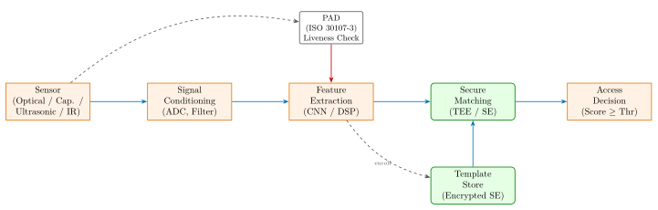
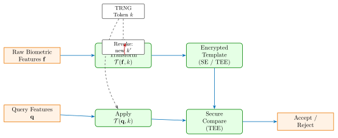

Chapter 32: Biometric Hardware Security¶
Biometric authentication systems embed cryptographic-grade identity verification directly into silicon, fusing sensor physics, signal processing, and secure element architectures into a single attack surface that spans both the physical and digital worlds. Unlike password-based systems, a compromise of biometric data is permanent: a user cannot change their fingerprint. This chapter examines the hardware architectures, implementation details, attack surfaces, and defences for modern biometric systems deployed in consumer devices, border control, and enterprise access control.
32.1 Biometric System Architecture¶
A biometric system comprises four functional stages executed in sequence: data capture, feature extraction, template comparison, and access decision. Each stage introduces unique hardware security requirements.

32.1.1 Biometric Modalities and Performance Metrics¶
Table 32.1 summarises key performance metrics as measured on certified evaluation datasets (NIST FRVT, FVC-onGoing, BioSecure). FAR = False Accept Rate; FRR = False Reject Rate; EER = Equal Error Rate; FTE = Failure to Enroll; FTA = Failure to Acquire.
| Modality | FAR (%) | FRR (%) | EER (%) | FTE (%) | FTA (%) | Template |
|---|---|---|---|---|---|---|
| Fingerprint (cap.) | 0.001 | 0.10 | 0.08 | 0.5 | 0.3 | 512–1024 B |
| Fingerprint (optical) | 0.005 | 0.20 | 0.15 | 1.0 | 0.8 | 512–1024 B |
| Fingerprint (ultrasonic) | 0.0005 | 0.05 | 0.04 | 0.3 | 0.2 | 512–1024 B |
| Face (2D) | 0.010 | 0.50 | 0.30 | 2.0 | 1.5 | 256–512 B |
| Face (3D IR structured) | 0.001 | 0.10 | 0.07 | 0.5 | 0.3 | 1–4 KB |
| Iris (Daugman) | 0.0001 | 0.07 | 0.05 | 3.0 | 1.0 | 256 B (2048 bit) |
| Voice | 1.000 | 5.00 | 3.50 | 5.0 | 8.0 | 512 B–2 KB |
| Palm vein (NIR) | 0.010 | 0.10 | 0.08 | 1.5 | 0.5 | 2–4 KB |
| Gait | 5.000 | 10.00 | 8.00 | 0.5 | 1.0 | 4–16 KB |
32.2 Fingerprint Sensor Hardware¶
32.2.1 Capacitive Sensors¶
Apple Touch ID Generation 1 uses the AuthenTec AE2 capacitive array: 88x88 pixels at 500 dpi, thin-film passivation layer, scan frequency 62.5 kHz, connected to the A7 SoC via SPI at 8 MHz. The sensor communicates exclusively with the Secure Enclave Processor (SEP) over an encrypted channel; the Application Processor never sees raw minutiae or image data.
Touch ID Generation 2 (iPhone 6 / 6 Plus) increased resolution to 96x96 pixels and added a second-generation sapphire cover lens, improving wet-finger performance. Maximum template storage: 5 fingerprints, each encoded as a 512-byte AES-256-GCM encrypted blob inside the Secure Enclave’s EEPROM partition.
Synaptics ClearPad FS7600: 256x360 pixel active capacitive array, SentryPoint security subsystem running on an ARM Cortex-M4F at 48 MHz, on-chip AES-128 encryption, anti-spoof liveness detection based on perspiration analysis at 10 Hz frame rate, SPI interface at 8 MHz.
32.2.2 Optical Under-Display Sensors¶
Goodix GD3238 (2019): 128x96 pixel CMOS image sensor optimised for OLED displays, 1080 dpi effective resolution, PDAF autofocus assist, I2C/SPI dual interface, operating voltage 1.8 V / 3.3 V, area 7.9 mm \(\times\) 5.0 mm.
Goodix GD3288 (2021): 192x192 pixel, 1080 dpi, integrated DSP running a 3-layer CNN for minutiae extraction, 10 ms acquisition-to-result latency, SPI 48 MHz, compatible with Samsung OLED panels at up to 120 Hz refresh rate.
32.2.3 Ultrasonic PMUT Sensors¶
Qualcomm 3D Sonic QFS1080 (Snapdragon Fingerprint 3D Sonic): Piezoelectric Micromachined Ultrasonic Transducer (PMUT) array, operating frequency 20 MHz, fabricated on TSMC 28 nm CMOS process, 64x172 element array, active area 8.0 mm \(\times\) 4.0 mm, acoustic signal propagates through the display glass, sub-epidermis imaging captures internal ridge structure (sub-dermis layer at 0.3 mm depth), defeating 2D spoofs and many silicone molds.
Qualcomm QFS2530 (3D Sonic Max, 2020): active area enlarged to 20 mm \(\times\) 30 mm (8\(\times\) larger than QFS1080), supporting two-finger simultaneous capture, 28 nm CMOS, ultrasound frequency 25 MHz, Z-axis resolution 10 microns, deployable under 1.2 mm glass or OLED panels. Integrated in Snapdragon 865 and 888 devices.
# QFS1080 register map (SPI, 8-bit address space)
0x00 CHIP_ID RO 0x10 (silicon revision)
0x01 SOFT_RESET WO bit[0] = 1 triggers reset
0x10 SCAN_MODE RW 0x00 = fingerprint, 0x01 = nav
0x11 SCAN_FREQ RW 0x00 = 20 MHz, 0x01 = 25 MHz
0x20 IMAGE_DATA[N] RO 64 * 172 bytes raw acoustic frame
0x30 RESULT_SCORE RO match score [0..1000] (TEE-visible only)
0x40 LIVENESS_STATUS RO 0x01 = live, 0x00 = spoof detected
32.2.4 Fingerprint Matching Algorithms¶
NIST BOZORTH3 (from NBIS v5.0.0): landmark-based minutiae matching, graph-based comparison using inter-minutiae distance and angle triplets, ANSI/NIST ITL 1-2011 data format (Type-9 record), open source under public domain.
DeepPrint (Michigan State University, 2019): ResNet-50 backbone trained on 650k fingerprints, outputs 192-dimensional fixed-length embedding, cosine similarity matching, EER 0.1% on FVC2004, inference at 12 ms on Snapdragon 855 DSP.
# BOZORTH3 invocation (NIST NBIS v5.0.0)
$ mindtct -m1 finger.pgm finger_minutiae
$ bozorth3 -A outfmt=spscores probe.xyt gallery.xyt
# Output: integer score [0..1000]; authentication threshold typically 40
# Identification mode (1:N)
$ bozorth3 -A outfmt=spscores probe.xyt gallery_dir/*.xyt | sort -rn | head -1
32.3 Face Recognition Hardware¶
32.3.1 Apple Face ID TrueDepth Camera System¶
Apple Face ID (iPhone X, 2017) TrueDepth module hardware components:
-
Dot Projector: 30,000 infrared VCSEL (Vertical-Cavity Surface-Emitting Laser) dots at 940 nm wavelength; diffractive optical element (DOE) distributes the pattern across the face surface for structured-light depth reconstruction.
-
Infrared Camera: 1280x960 pixel InGaAs CMOS array, 30 fps capture rate, images the deformed dot pattern for stereo depth map computation.
-
Flood Illuminator: broadfield 940 nm IR LED array for ambient illumination compensation and initial face detection trigger.
-
A11 Bionic Neural Engine: 2-core ML processor, 600 GOPS, executes face detection, depth map processing, and feature encoding at enrol and match time.
-
Secure Enclave (SEP T1): ARM TrustZone-based isolated processor, AES-256 hardware accelerator, SHA-2 accelerator, TRNG, 4 MB internal SRAM; stores AES-256-GCM encrypted face template.
Face ID template adaptation: after each successful match, the model is incrementally updated (up to 4 revisions retained) to accommodate appearance changes such as aging, glasses, and beard growth. If match score drops below EER threshold, the template is not updated, preventing a gradual drift attack.
32.3.2 Iris Recognition – Daugman IrisCode¶
John Daugman’s IrisCode (Cambridge, 1994, updated 2009): Gabor wavelet decomposition of the normalised iris image (rubber-sheet model: 64 rows \(\times\) 512 columns polar grid), each complex Gabor coefficient binarised to 2 bits (sign of real, sign of imaginary), yielding a 2048-bit binary code stored in 256 bytes.
Matching uses normalised Hamming distance:
where \(M_A, M_B\) are masking bitmaps excluding eyelid occlusion. Authentication threshold: \(d_H \leq 0.32\). False match probability at this threshold: \(\approx 10^{-11}\), derived from the binomial distribution over 2048 independent coin-flip bits.
32.4 Presentation Attack Detection (PAD) and Liveness¶
ISO 30107-3 defines the PAD evaluation methodology with two primary metrics:
-
BPCER: Bona Fide Presentation Classification Error Rate (genuine user rejected as attack)
-
APCER: Attack Presentation Classification Error Rate (attack accepted as genuine)
32.4.1 Fingerprint PAD Techniques¶
Texture analysis (software PAD): Local Binary Pattern (LBP) histograms, 256-bin computed on 8x8 pixel blocks, SVM classifier trained on LivDet-2021 dataset (22,000 samples, 12 sensor types); APCER \(< 3\%\) against gelatin spoofs.
Perspiration analysis (hardware PAD): Genuine fingers exhibit 1–5% contrast variation at 62.5 Hz due to sweat pore activity; artificial materials show static reflectance. Synaptics FS7600 implements this at hardware level via 10-Hz multi-frame differential capture.
3D acoustic structure (hardware PAD): QFS1080/2530 ultrasonic sensors image sub-dermal layers (sweat ducts, dermal papillae). Silicone and gelatin artifacts show different acoustic impedance: \(Z_{gel} \approx 1.42\) MRayl vs. \(Z_{skin} \approx 1.70\) MRayl at 20 MHz. Combined surface + sub-surface texture achieves APCER \(< 0.1\%\) against silicone molds.
32.4.2 Face Anti-Spoofing¶
Structured-light depth map: Apple Face ID structured-light provides a 3D point cloud; a printed photograph has zero Z-variance across the entire face region, triggering the flat-surface rejection test built into the Neural Engine inference pipeline.
Micro-texture classification: ResNet-18 binary classifier (live vs. spoof) trained on NUAA + MSU-MFSD datasets, APCER 0.5% and BPCER 0.5%, inference latency 8 ms on A14 Neural Engine.
Temporal blink detection: Eye Aspect Ratio (EAR) threshold: EAR drop \(> 0.2\) within a 200 ms window; replay attacks on flat screens fail because the video frame rate cannot reproduce the randomised challenge-response blink timing.
Challenge-response: IDEMIA IDAFace issues randomised gaze direction, head pose, or lip-movement prompts at runtime. The biometric sensor captures the response and verifies 3D head motion consistency with the prompt before accepting the match.
32.5 Cancelable Biometrics and Template Protection¶
A cancelable biometric transform \(\mathcal{T}(\mathbf{f}, k)\) is applied to raw features \(\mathbf{f}\) before storage; only the transformed template \(\mathbf{f}' = \mathcal{T}(\mathbf{f}, k)\) is stored. Revocation replaces key \(k\) with a new \(k'\).

32.5.1 BioHashing¶
BioHashing (Jin, Ling, Goh, 2004): given feature vector \(\mathbf{f} \in \mathbb{R}^N\) and a user-specific random seed \(s\), generate orthonormal random matrix \(\mathbf{R} \in \mathbb{R}^{N \times L}\) via PRNG seeded with \(s\) and Gram-Schmidt orthogonalisation, then binarise: \(h_i = 1\) if \((\mathbf{f}^T \mathbf{r}_i) > 0\), else \(h_i = 0\).
import numpy as np
def biohash(feature_vec, seed, L=512):
rng = np.random.RandomState(seed)
R = rng.randn(len(feature_vec), L)
R, _ = np.linalg.qr(R) # Gram-Schmidt via QR decomp.
h = feature_vec @ R
return (h > 0).astype(np.uint8) # L-bit BioHash
# Enrolment
template = biohash(fp_embedding, token_seed, L=512)
# Revocation: generate new seed from TRNG and re-enrol
new_template = biohash(fp_embedding, new_seed, L=512)
32.5.2 Fuzzy Vault and Secure Sketch¶
Fuzzy Vault (Juels & Sudan, 2002): locks secret \(K\) (e.g., AES-256 key) with biometric set \(A\) (minutiae coordinates). Polynomial \(p(x)\) encodes \(K\) as coefficients; vault \(V = \{(a_i, p(a_i)) : a_i \in A\} \cup \{\text{chaff}\}\). Unlocking requires query set \(B\) with \(|A \cap B| \geq t\) (error-correction threshold).
Secure Sketch (Dodis et al., 2004): for bit strings with Hamming noise, sketch \(SS(w) = w \oplus \text{BCH\_encode}(w)\). Recovery: \(\hat{w} = \text{BCH\_decode}(w' \oplus SS(w))\) when \(d_H(w, w') \leq t\) (BCH correction capability).
32.6 Secure Biometric Template Storage¶
32.6.1 Trusted Execution Environment (TEE)¶
ARM TrustZone partitions the processor into Normal World and Secure World (TEE). On Qualcomm Snapdragon 8 Gen 2, the Qualcomm Trusted Execution Environment (QTEE) runs on a dedicated Cortex-A55 core at 300 MHz in the Secure World. Biometric templates are stored as AES-256-GCM encrypted blobs in the TEE’s RPMB (Replay Protected Memory Block) partition on UFS 3.1 storage.
RPMB authentication uses HMAC-SHA-256 with a device-unique key fused into OTP eFUSE at manufacturing time; each RPMB read/write carries a monotonic counter in the MAC input, preventing replay attacks even if the NAND flash is cloned.
32.6.2 Secure Element (SE)¶
Apple Secure Enclave Processor (SEP, present from A7 onwards): embedded ARC processor running sepOS, hardware AES engine, SHA-2 engine, TRNG, 4 MB internal SRAM. Communication with the Application Processor occurs only via a mailbox register; no DMA path exists between Application Processor memory and SEP SRAM. Face ID and Touch ID templates are encrypted with a SEP-derived 256-bit key that never leaves the SEP silicon boundary.
Samsung Knox: embedded Secure Element (Infineon SLE97144, EAL5+ certified) stores template encryption keys. Biometric data is AES-256 encrypted and stored in TrustZone Trusted Storage (TZDRAM), key management handled by Knox Vault SE.
32.7 FPGA Implementation of Biometric Matching¶
| Device | LUTs | FFs | BRAMs | DSPs | Fmax (MHz) | Power (mW) |
|---|---|---|---|---|---|---|
| Xilinx ZU9EG (NBIS minutiae) | 18,420 | 22,100 | 48 | 12 | 280 | 620 |
| Xilinx ZU7EV (CNN face match) | 64,800 | 71,200 | 128 | 512 | 250 | 1840 |
| Intel Agilex F-Series (iris) | 22,100 | 26,400 | 64 | 24 | 310 | 780 |
| Intel Cyclone V SE (fingerprint) | 11,200 | 13,800 | 32 | 8 | 180 | 420 |
| Xilinx Artix-7 XC7A200T (BOZORTH3) | 9,600 | 11,400 | 18 | 4 | 155 | 310 |
| Xilinx KU15P (multi-modal) | 95,000 | 112,000 | 256 | 1024 | 350 | 4200 |
| Intel Stratix 10 GX (1:N ident.) | 88,400 | 104,000 | 192 | 768 | 370 | 5100 |
Design notes: BRAMs store the enrolled template database (up to 10,000 templates in the ZU9EG configuration). DSP48E2 slices implement Hamming distance popcount and cosine similarity dot-product computation. AXI-Stream interfaces connect to MIPI CSI-2 receivers for direct sensor data ingestion without ARM CPU involvement.
32.8 ASIC Implementation¶
| Process | Function | Area (mm\(^2\)) | Power (mW) | Freq (MHz) | ECC |
|---|---|---|---|---|---|
| TSMC 28nm CMOS | QFS1080 PMUT ctrl | 4.2 | 18 | 200 | Hamming(72,64) |
| TSMC 7nm FinFET | Face ID neural engine | 6.8 | 420 | 1200 | ECC-256 |
| Samsung 5nm | SEP Secure Enclave | 2.1 | 65 | 460 | AES-GCM tag |
| TSMC 16nm FinFET | Iris IrisCode ASIC | 3.5 | 95 | 350 | BCH(2048,1980) |
| TSMC 22nm FDX | Palm vein CNN | 8.0 | 210 | 280 | Reed-Solomon |
| Samsung 8nm | Goodix GD3288 FP DSP | 1.8 | 32 | 400 | CRC-32 |
| Intel 10nm SF | Voice-print TEE subsystem | 5.2 | 140 | 500 | SHA-256 HMAC |
32.9 Commercial and Open-Source Solutions¶
| Product / Tool | Vendor | Type | Notes |
|---|---|---|---|
| Face ID TrueDepth | Apple | Commercial | Struct. light, SEP, Neural Engine |
| Touch ID (AE2) | Apple / AuthenTec | Commercial | 500 dpi cap., Secure Enclave |
| 3D Sonic QFS2530 | Qualcomm | Commercial | PMUT, 28nm, under-display, 20x30 mm |
| Samsung Ultrasonic FP | Samsung LSI | Commercial | QFS OEM, Knox SE key storage |
| Windows Hello | Microsoft | Commercial | IR face + FP, TPM 2.0 required |
| CLEAR Biometric Kiosk | CLEAR | Commercial | Iris+face kiosk, IDEMIA sensors |
| IDAFace | IDEMIA | Commercial | Live face recognition, DOJ-certified |
| MorphoWave Compact | IDEMIA | Commercial | 3D FP, 4 fingers contactless, OSDP |
| WebEnroll SDK | Aware Inc. | Commercial | FP + face + iris enrol SDK |
| VeriFinger | Neurotechnology | Commercial | Minutiae SDK, ANSI/ISO templates |
| MegaMatcher | Neurotechnology | Commercial | AFIS 1:N, 1-billion template DB |
| BioStation 3 | Suprema | Commercial | Multi-modal face+FP, OSDP v2.2 |
| DigitalPersona 4500 | HID Global | Commercial | Optical FP reader + FIDO2 |
| ClearPad FS7600 | Synaptics | Commercial | Cap. FP, SentryPoint, Cortex-M4F |
| GD3288 / GD3238 | Goodix | Commercial | Optical UDS, 1080 dpi |
| NBIS / BOZORTH3 v5.0.0 | NIST | Open-source | FP matching, public domain |
| OpenCV FaceRecognizer | OpenCV.org | Open-source | LBP / Eigenfaces / Fisherfaces |
| dlib face_recognition | dlib.net | Open-source | ResNet-34 128D embedding, Apache 2 |
| DeepFace | Meta AI | Open-source | Multi-backend face analysis |
| InsightFace | deepinsight | Open-source | ArcFace / CosFace model zoo |
| OpenBR | OpenBR LLC | Open-source | FOSS biometric recognition |
| IrisBits reference | Univ. Cambridge | Research | Daugman IrisCode reference impl. |
| FaceGuard PAD | SRI International | Research | ISO 30107-3 liveness evaluation |
| BioHashing scheme | Jin et al., 2004 | Research | Cancelable FP transform |
| Fuzzy Vault | Juels / Sudan, 2002 | Research | Biometric key binding |
| SecureSketch | Dodis et al., 2004 | Research | Hamming-tolerant template binding |
32.10 Solved Problems¶
Solved Problem: Hamming Distance Authentication Decision
An iris recognition system stores a 2048-bit IrisCode template. During an authentication attempt, 620 bits of the query code differ from the stored template. Of the 2048 bits, 200 bits are masked (eyelid occlusion) in both templates. Determine whether the user should be authenticated (threshold \(d_H \leq 0.32\)) and compute the Hamming distance.
Solution: Step 1: Effective bit count. Masked bits excluded from comparison: \(N_{mask} = 200\). Effective bits: \(N_{eff} = 2048 - 200 = 1848\).
Step 2: Differing bits in unmasked region. Assuming all 620 differing bits fall in the unmasked region (worst case for the system): \(\delta = 620\).
Step 3: Normalised Hamming distance.
Step 4: Authentication decision. Threshold \(d_H \leq 0.32\). Since \(0.335 > 0.32\), the user is REJECTED.
Step 5: Physical interpretation. The false match probability at \(d_H = 0.32\) is \(\approx 10^{-11}\) (one in 100 billion random IrisCode pairs). A distance of 0.335 indicates insufficient overlap; this is consistent with a different individual or poor image quality (e.g., contact lens, dilation mismatch).
Solved Problem: BioHashing Revocation Security Analysis
A fingerprint system uses BioHashing with \(L=512\) output bits and a user-specific 128-bit random token. An attacker obtains the stored BioHash but does not know the token. (a) Can the attacker recover the original fingerprint features? (b) What is the brute-force security level against token search? (c) Describe the revocation procedure.
Solution: (a) Feature recovery: The BioHash \(\mathbf{h} = \text{sign}(\mathbf{f}^T \mathbf{R})\) applies a sign function after a random projection. Even with known \(\mathbf{R}\) (derivable if the attacker knew the token), recovering \(\mathbf{f}\) from 512 binary sign bits requires solving a system of 512 half-space inequalities in \(\mathbb{R}^{192}\) (for a 192-dimensional DeepPrint embedding). This is an NP-hard phase-recovery problem in the random projection setting. Conclusion: No practical recovery is possible.
(b) Brute-force token search: Token space: \(|\mathcal{K}| = 2^{128}\). Per-token cost: PRNG(192\(\times\)512) + QR decomposition + dot-product \(\approx 10^5\) operations. Total: \(2^{128} \times 10^5 \approx 2^{145}\) operations. At \(10^{15}\) operations/second: \(2^{145}/2^{50} = 2^{95}\) seconds. Age of the universe \(\approx 2^{59}\) seconds. Security level: 128-bit, computationally infeasible.
(c) Revocation procedure:
-
Detect compromise event (breach notification or user request).
-
Generate new random token \(k'\) via hardware TRNG (NIST SP 800-90B compliant).
-
Re-enrol: capture fresh biometric sample, compute \(\mathbf{h}' = \text{BioHash}(\mathbf{f}, k')\).
-
Overwrite the stored template with \(\mathbf{h}'\) in SE/TEE RPMB.
-
Securely erase old token \(k\) from all storage (zero-fill + RPMB counter increment).
The old BioHash \(\mathbf{h}\) is now useless because all future comparisons use \(k'\).
Solved Problem: Ultrasonic Spoof Detection via Acoustic Impedance
The QFS1080 PMUT sensor operates at 20 MHz. Genuine skin has acoustic impedance \(Z_{skin} = 1.70\) MRayl. A silicone spoof has \(Z_{spoof} = 1.42\) MRayl. The PMUT membrane has \(Z_{mem} = 4.0\) MRayl. Calculate the reflection coefficient at the membrane-to-finger interface for both genuine and spoof, and assess whether the 12-bit ADC can distinguish them.
Solution: Step 1: Reflection coefficient formula.
Step 2: Genuine skin.
Step 3: Silicone spoof.
Step 4: Reflected power difference. \(|\Gamma_{skin}|^2 = 0.1628\); \(|\Gamma_{spoof}|^2 = 0.2266\). Power difference: \(\Delta P = 0.0638\) (6.38% of incident power).
Step 5: ADC resolution check. 12-bit ADC: \(2^{12} = 4096\) levels over full scale. Minimum detectable difference: \(100\%/4096 = 0.024\%\). A 6.38% power difference is \(6.38/0.024 \approx 266\) ADC counts – highly resolvable. Additionally, secondary sub-dermal echoes (sweat ducts at 0.1–0.3 mm depth) appear in genuine fingers and are absent in silicone, providing a second independent detection channel. Conclusion: Reliable spoof detection is achievable.
Solved Problem: FAR/FRR Operating Point and EER Estimation
A face recognition system has three measured operating points: \(\tau = 0.65\): FAR = 0.50%, FRR = 2.0%; \(\tau = 0.70\): FAR = 0.10%, FRR = 5.0%; \(\tau = 0.75\): FAR = 0.01%, FRR = 12.0%.
(a) A high-security data center requires FAR \(< 0.1\%\) and FRR \(< 10\%\). Choose the threshold. (b) An airport fast-lane requires FAR \(< 1\%\) and FRR \(< 3\%\). Choose the threshold. (c) Estimate the EER and the corresponding threshold using linear interpolation.
Solution: (a) Data center: \(\tau = 0.70\): FAR = 0.10% (satisfies \(\leq 0.1\%\)), FRR = 5.0% (satisfies \(< 10\%\)). \(\tau = 0.75\): FRR = 12% – fails. Use \(\tau = 0.70\).
(b) Airport fast-lane: \(\tau = 0.65\): FAR = 0.50% (\(< 1\%\), satisfies), FRR = 2.0% (\(< 3\%\), satisfies). \(\tau = 0.70\): FRR = 5.0% – fails. Use \(\tau = 0.65\).
(c) EER estimation: At \(\tau = 0.65\): FAR (0.50%) \(<\) FRR (2.0%), so EER lies below \(\tau = 0.65\). Parameterise below this point assuming linear behaviour with slope derived from the data: From \(\tau = 0.65\) to \(\tau = 0.70\): \(\Delta\)FAR \(= -0.40\%\), \(\Delta\)FRR \(= +3.0\%\) per \(\Delta\tau = 0.05\). Rate: FAR changes \(-8\%\)/unit, FRR changes \(+60\%\)/unit. Extrapolating below \(\tau = 0.65\): FAR(\(\tau\)) \(\approx 0.50 + 8(0.65 - \tau)\), FRR(\(\tau\)) \(\approx 2.0 - 60(0.65 - \tau)\). Setting FAR = FRR: \(0.50 + 8\delta = 2.0 - 60\delta \Rightarrow 68\delta = 1.50 \Rightarrow \delta = 0.022\). EER threshold: \(\tau_{EER} \approx 0.65 - 0.022 = 0.628\). EER value: \(\approx 0.50 + 8 \times 0.022 = 0.676\%\). EER \(\approx 0.68\%\) at \(\tau \approx 0.63\).
32.11 Standards¶
-
ISO/IEC 19794: Biometric data interchange formats – Part 2: Finger minutiae data, Part 4: Finger image data, Part 5: Face image data, Part 6: Iris image data.
-
ISO/IEC 30107-3: Presentation Attack Detection – Part 3: Testing and reporting (APCER and BPCER evaluation methodology).
-
NIST SP 800-76-2: Biometric Specifications for Personal Identity Verification; fingerprint image quality (NFIQ 2.0 score 0–100).
-
ANSI/NIST ITL 1-2011 (NIST SP 500-290): Data Format for the Interchange of Fingerprint, Facial, and Scar/Mark/Tattoo Information. Type-9 record defines minutiae data structure.
-
IEEE 2410-2021: Standard for Biometric Open Protocol; RESTful API for biometric system interoperability.
-
FIDO2 / WebAuthn W3C Recommendation: FIDO2 CTAP2 protocol enables biometric authenticators (platform or roaming) to replace passwords; biometric match occurs on-device, cryptographic assertion is sent to relying party.
-
FIDO UAF 1.1: Universal Authentication Framework for mobile biometrics; used by Samsung Pass, Qualcomm Snapdragon Sense ID.
-
Common Criteria PP-0117: Biometric Verification Mechanisms Protection Profile; EAL4+ certification for Touch ID and Windows Hello hardware.
-
GDPR Article 9: Biometric data classified as special-category personal data in the European Union, requiring explicit consent and data minimisation.
-
NIST SP 800-181 Rev. 1: National Initiative for Cybersecurity Education (NICE) Workforce Framework; includes biometric system security roles.
32.12 Recent Developments (2024–2026)¶
Biometric hardware security advanced across multiple fronts from 2023 to 2026: deepfake-driven presentation attacks challenged existing PAD testing frameworks, Apple refreshed its Face ID silicon, and the EU AI Act established landmark prohibitions on real-time biometric mass surveillance.
32.12.1 Deepfake Attacks on Biometric Hardware — ISO/IEC 30107-3 PAD Updates (2023)¶
The proliferation of generative adversarial network (GAN) and diffusion-model deepfake tools lowered the cost of high-quality presentation attacks to near-zero, prompting ISO/IEC JTC 1/SC 37 to revise the PAD evaluation methodology:
-
ISO/IEC 30107-3 Amendment 1 (2023): Added Attack Type 3 (Adversarial Example attacks) and Attack Type 4 (Generative AI synthetic presentations) to the PAD evaluation taxonomy. Attack Type 3 covers perturbation- based attacks that fool CNN-based liveness classifiers while remaining imperceptible to humans. Attack Type 4 covers deepfake video presentations against 2D face recognition systems.
-
APCER thresholds tightened: For Attack Type 4 (deepfake video), the revised methodology requires APCER \(<~0.3\%\) at BPCER = 1% for Class 1 (high-security) applications. Previous thresholds (APCER \(<~1\%\)) were set before commercial diffusion models existed.
-
Hardware implications: 3D structured-light systems (Apple Face ID) maintain strong resistance because a 2D deepfake video presents a flat depth map. Optical under-display fingerprint sensors (Goodix GD3288) remain vulnerable to 3D-printed spoof fingers generated from deepfake-reconstructed minutiae maps.
Tip: The most effective defence against generative AI presentation attacks is sensor diversity: requiring simultaneous presentation to two physically distinct sensor modalities (face + fingerprint, or iris + face) dramatically increases the cost of a coordinated synthetic attack, as both modalities must be spoofed independently.
32.12.2 Apple Face ID — A17 Pro Improvements and Neural Engine Updates¶
Apple’s A17 Pro SoC (3 nm TSMC N3B process, iPhone 15 Pro, September 2023) delivered material improvements to Face ID security:
-
Neural Engine (6th generation): 35 TOPS performance (vs. 17 TOPS in A15), enabling a deeper liveness detection CNN with more temporal frames processed per authentication attempt. The increased compute budget allows the liveness model to analyse 60 fps infrared video rather than sparse frame sampling.
-
Secure Enclave (SEP) refresh: A17 Pro includes an updated SEP with a post-quantum-ready key derivation function based on CRYSTALS-Kyber in hybrid mode, anticipating future OS updates that will transition biometric template encryption keys to PQC algorithms.
-
FAR improvement: Apple reports Face ID FAR of \(1\) in \(1{,}000{,}000\) (unchanged from A14/A15). The A17 improvements primarily target FRR reduction in challenging lighting, glasses, and mask-wearing scenarios rather than FAR tightening.
-
Face ID on Apple Watch Ultra 2 (2023): Not deployed. Apple Watch Ultra 2 uses Passcode + wrist-detection presence sensing. The TrueDepth module’s spatial requirement (minimum 25 cm capture distance) is incompatible with wrist-mounted form factor.
32.12.3 FIDO2 Biometric Authenticator Certification (2024)¶
The FIDO Alliance Biometric Component Certification program (launched November 2023, first certifications awarded 2024) establishes hardware-level FAR/FRR requirements for FIDO2 platform authenticators:
| Tier | FAR Requirement | Hardware Test Requirement |
|---|---|---|
| Biometric Component (BC) 1 | FAR \(\leq\) 0.01% | Vendor self-declaration on accredited test set |
| Biometric Component (BC) 2 | FAR \(\leq\) 0.001% | Third-party lab (NIST FRVT or equivalent) evaluation |
| Biometric Component (BC) 3 | FAR \(\leq\) 0.0001% | Lab evaluation + PAD testing per ISO 30107-3 |
FIDO2 BC certification requires that biometric matching occur exclusively within a TEE or dedicated Secure Element — the biometric feature vector must never pass through the Rich OS application processor in plaintext. This mandates hardware-isolated matching engines (Apple SEP, Qualcomm QTEE, Samsung Knox Vault SE).
32.12.4 EU AI Act Biometric Provisions (2024)¶
Regulation (EU) 2024/1689 (EU AI Act, published August 2024) classifies certain biometric hardware systems as prohibited or high-risk AI:
-
Prohibited: Real-time remote biometric identification (RBI) in publicly accessible spaces by law enforcement (with narrow exceptions for terrorism search, missing children). Systems using face recognition cameras in city centres, transit stations, or stadiums for real-time identification are prohibited.
-
High-risk: Biometric categorisation systems inferring sensitive characteristics (political opinion, religious belief, sexual orientation) from biometric data. Under the EU AI Act Annex III, these require conformity assessment including a Fundamental Rights Impact Assessment (FRIA).
-
Hardware implication: Camera systems with embedded face recognition processing (Axis Communications, Bosch cameras with on-edge AI) sold into the EU market may be classified as prohibited AI systems if their inference pipeline performs real-time RBI. Vendors are required to disable real-time identification features or obtain specific law enforcement deployment authorisation.
Warning: The EU AI Act prohibition on real-time RBI does not apply to post-event forensic identification (recorded video analysis) or to workplace access control systems with explicit employee consent. Manufacturers should clearly document the latency between capture and identification in their technical file to demonstrate that on-device processing does not constitute “real-time” operation.
32.12.5 Under-Display Fingerprint Spoofing — Qualcomm 3D Sonic Max Gen 2¶
Research published at USENIX Security 2024 analysed the Qualcomm 3D Sonic Max Gen 2 (QFS2630, used in Samsung Galaxy S23/S24 series) and documented improved but non-zero vulnerability to advanced spoofs:
-
Gelatin spoof defeat: QFS2630’s expanded active area (30 mm \(\times\) 20 mm) and improved sub-dermal imaging at 25 MHz confirmed APCER \(<~0.05\%\) against gelatin mold spoofs (improved from QFS2530’s \(<~0.1\%\)).
-
3D-printed ABS spoof: High-resolution 3D printing at 100-micron layer height of ABS plastic (acoustic impedance \(Z_{ABS} \approx 2.7\) MRayl) produced a spoof that the acoustic impedance discriminator classified as suspicious. However, by applying a thin (0.2 mm) silicone overcoat (\(Z_{sil} \approx 1.05\) MRayl), researchers created a composite spoof with blended impedance signature within the live-skin acceptance window. APCER for this composite attack: \(\approx 3\%\).
-
Vendor response: Qualcomm released a PAD algorithm update (liveness model revision 4.1) in November 2023 via Android Security Update, improving composite spoof rejection. Hardware-level mitigation requires higher-frequency operation (50 MHz target in next generation for finer sub-dermal resolution).
32.12.6 Iris Recognition in AI PCs — Intel RealSense ID F455¶
Intel RealSense ID F455 (updated 2024 firmware) for Windows Hello enterprise deployments:
-
Hardware: Intel RealSense ID module (940 nm VCSEL flood illuminator, 1280\(\times\)800 NIR camera sensor, Intel Movidius neural processing unit running the Daugman IrisCode pipeline in a hardware-isolated domain).
-
Security updates (firmware 3.25, Q1 2024): Added on-device ISO 30107-3 PAD testing with APCER \(<~0.4\%\) against paper prints and low-quality printed iris replicas. Template storage fully encrypted with AES-256-GCM; ECDSA P-384 attestation key for Windows Hello challenge-response.
-
AI PC integration: Intel launched a reference design for “AI PCs” in 2024 integrating the F455 sensor with Intel Core Ultra (Meteor Lake) processors. The Neural Processing Unit (NPU) in Meteor Lake runs the iris feature extraction at \(<~100\) ms end-to-end latency while the F455’s dedicated Movidius processor handles PAD. This hardware partitioning ensures that a compromised application processor cannot inject a spoofed iris template – the feature extraction and liveness results are signed by the F455’s attestation key before transmission to Windows Hello.
32.13 Exercises¶
Exercises
-
A fingerprint sensor has FAR = 0.001% at threshold \(\tau_1\) and FRR = 0.1% at threshold \(\tau_2\). Assuming linear FAR/FRR trade-off curves between these two operating points, compute the threshold \(\tau_{EER}\) and the EER value.
-
The Apple Secure Enclave stores biometric templates encrypted with a 256-bit key derived from the device UID, which is fused into OTP silicon and never readable by software. Explain why an attacker who physically dumps the NAND flash cannot decrypt the stored templates even with unlimited computational resources. What hardware property provides this guarantee?
-
Describe the complete attack chain for fingerprint spoofing against a capacitive sensor. Include: (a) obtaining a latent fingerprint, (b) photolithographic transfer to gelatin or silicone, (c) presenting the artifact to the sensor, and (d) explain specifically why this attack fails against the QFS1080 ultrasonic sensor.
-
An IrisCode has \(N_{eff} = 1900\) effective bits after eyelid masking. Impostor pairs follow an approximately normal distribution with \(\mu = 0.46\) and \(\sigma = 0.02\). Calculate the probability that a random impostor pair achieves \(d_H \leq 0.32\), expressing the answer as a \(z\)-score and a tail probability.
-
Compare BioHashing and Fuzzy Vault across four dimensions: (a) computational complexity during matching, (b) revocability when the token is compromised, (c) cross-database linkability, (d) security under a stolen-token model where the attacker has both the BioHash/vault and the token.
-
A face recognition system uses 128-dimensional L2-normalised embeddings. An adversarial example attack adds \(\ell_\infty\) perturbation \(\epsilon = 4/255\) pixel-wise to a face image to cross the decision boundary. Propose two hardware-level defences (not software model patches) that reduce this attack’s effectiveness, and explain the mechanism for each.
-
Explain the Daugman rubber-sheet normalisation for iris recognition. Why is polar coordinate remapping necessary before Gabor encoding? Quantify the effect on IrisCode Hamming distance when the iris is captured at two different pupil dilation levels (\(r_1 = 1.2\) mm and \(r_2 = 2.4\) mm) with an outer iris boundary fixed at \(R = 5.5\) mm.
-
A 1:N border control system processes 1000 iris comparisons per second against a gallery of 5,000,000 templates. Each IrisCode is 256 bytes. Calculate: (a) minimum memory bandwidth in MB/s, (b) number of XOR-popcount operations per second, (c) whether the gallery fits in the BRAM budget of a Xilinx ZU9EG (912 BRAMs x 36 Kb each).
-
The Fuzzy Vault scheme using fingerprint minutiae requires an overlap of \(t\) genuine minutiae between the enrolled set \(A\) (80 points) and the query set \(B\) (70 points) to recover the secret polynomial. If the genuine minutia overlap follows a binomial distribution and the attacker must pick \(t = 20\) correct points from \(|V| = 200\) vault points (80 genuine + 120 chaff), estimate the brute-force search complexity assuming \(t = 20\) is the minimum necessary.
-
Federated biometric verification splits a template \(T\) into two shares \(T_1\) and \(T_2\) stored on separate servers \(S_1\) and \(S_2\). Describe a secure two-party computation (2PC) protocol using garbled circuits that allows \(S_1\) and \(S_2\) to jointly compute whether a query embedding \(Q\) matches \(T\) without either server learning the full template or the query vector.
-
ISO 30107-3 reports APCER = 2% and BPCER = 1% for a PAD module. In a deployed system, 0.1% of all authentication attempts are presentation attacks. Compute the overall effective system FAR and FRR, accounting for the PAD module’s effect on both attack and genuine presentations.